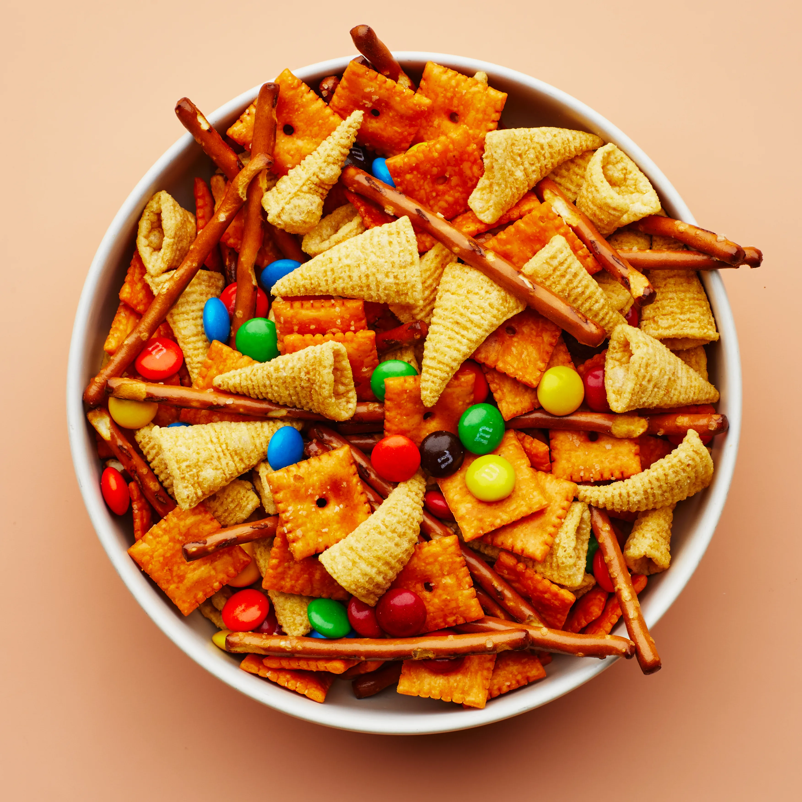
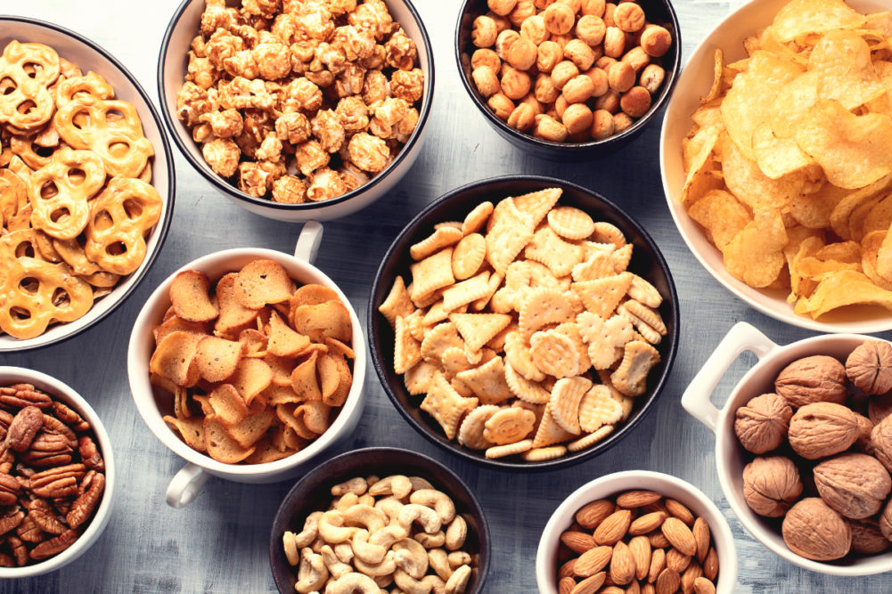
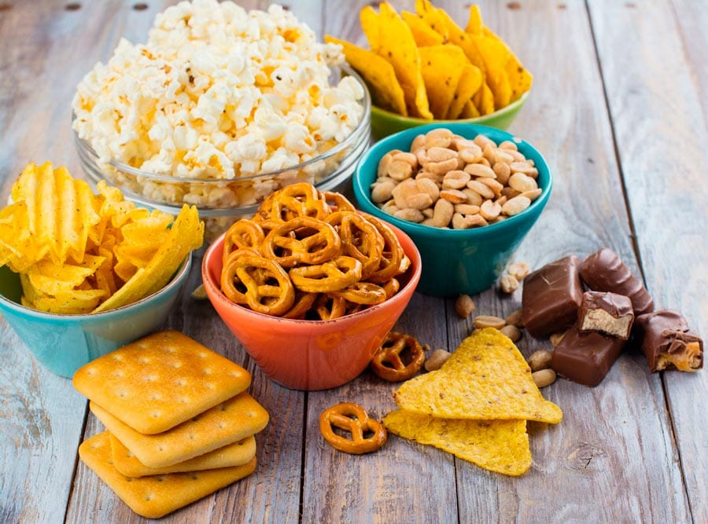
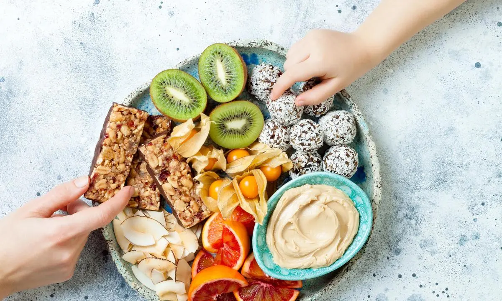

En esta conferencia, nos adentraremos en el fascinante mundo de los snacks y exploraremos las diversas opciones disponibles para una alimentación equilibrada. A medida que el ritmo de vida se acelera, los snacks se han convertido en una parte integral de nuestra rutina diaria. Sin embargo, la elección de los snacks adecuados puede ser un desafío.
Exploraremos los fundamentos de una dieta equilibrada y la importancia de incluir snacks saludables en ella. Analizaremos los nutrientes esenciales y las propiedades beneficiosas que los snacks pueden aportar a nuestro organismo. Además, discutiremos cómo los snacks pueden satisfacer nuestras necesidades nutricionales y ayudar a controlar el apetito, evitando el consumo excesivo de alimentos en las comidas principales.
Además de los snacks comerciales, también exploraremos alternativas caseras. Descubriremos cómo preparar fácilmente snacks saludables en casa utilizando ingredientes naturales y frescos. Compartiremos recetas prácticas y deliciosas que pueden adaptarse a diferentes preferencias alimentarias y necesidades dietéticas.
¡Regístrate ahora!Los snacks pueden ser una opción para controlar el hambre y evitar llegar a las comidas principales con demasiada hambre. Esto puede ayudar a regular el apetito y prevenir la sobreingesta en las comidas, lo que puede ser beneficioso para el control del peso.
Algunos snacks, como frutos secos, semillas y frutas, contienen nutrientes que pueden mejorar la función cerebral y aumentar la concentración. Estos alimentos pueden ser especialmente útiles durante períodos de estudio, trabajo o actividades que requieran un enfoque mental.
Algunos snacks, como el chocolate oscuro, contienen compuestos que pueden estimular la liberación de endorfinas y serotonina, lo que mejora el estado de ánimo y genera sensaciones de placer y bienestar.
Los snacks saludables pueden ser una forma de agregar nutrientes esenciales a la dieta. Por ejemplo, los snacks que contienen frutas, verduras, nueces y semillas pueden proporcionar vitaminas, minerales, fibra y grasas saludables.
Para más informacion comunicarse con el siguiente correo:
snackconference@hotmail.com